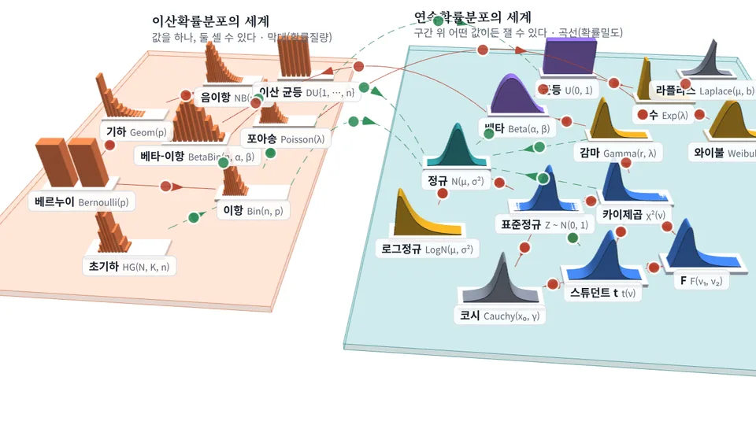
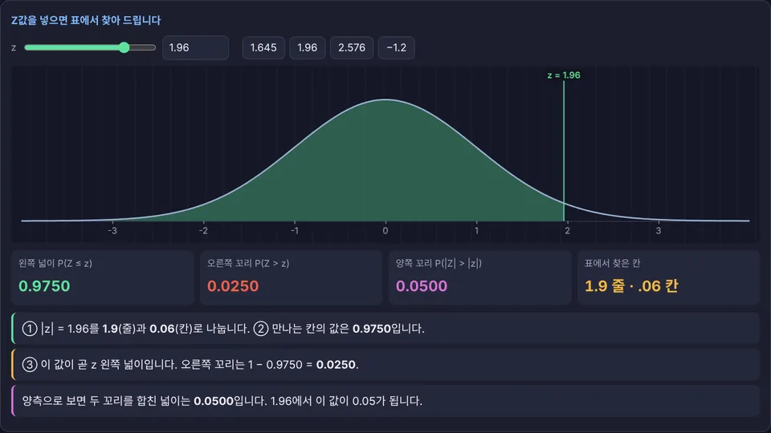

분포들이 어떻게 이어지는지 먼저 지도로 보고, 그 분포의 표를 읽어 검정과 신뢰구간에 쓰는 법까지 이어 봅니다.

이산확률분포의 세계와 연속확률분포의 세계로 나눈 3D 지도. 21개 분포를 각자의 3D 그래프로 보여 주고 관계를 잇습니다. 분포마다 식, 용도, 파이썬 호출, 생성 AI 프롬프트.

Z·t·χ²·F·이항·포아송 표 읽는 법, 단측과 양측, 검정과 신뢰구간, 1종·2종 오류와 검정력. 일반 설명과 쉬운 설명 선택.